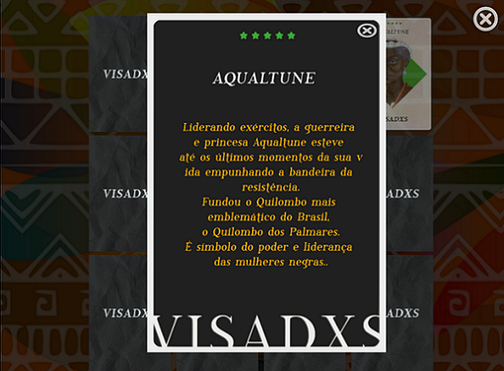

🠔 VISADXS
VISADXS é um jogo da memória e educativo, utilizando de diversas imagens de grandes personalidades negras, indigenas e caribenhas.
Desenvolvimento:
O Jogo foi desenvolvido na Godot, a pedido da Livro Livre Curió Biblioteca Comunitária. Atuei com a programação e parte da arte, junto com Lia Godoy. O projeto é apoiado pela Secretaria Municipal da Cultura de Fortaleza (Secultfor) e Governo Federal, por meio da Secretaria Especial da Cultura e contemplado através do Edital Territórios Culturais e Tradicional na Lei Aldir Blanc Ceará.
Jogue:
VISADXS - Jogo de representatividade.
